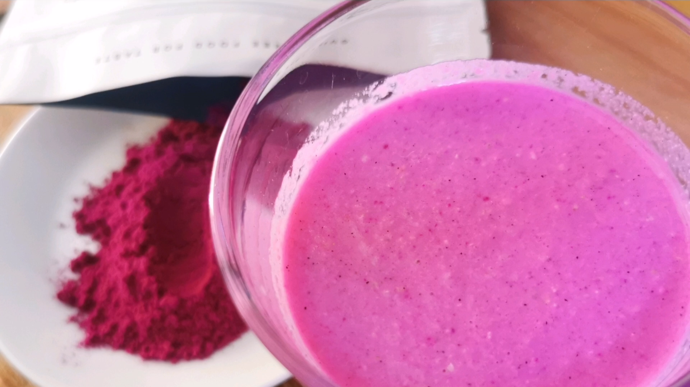
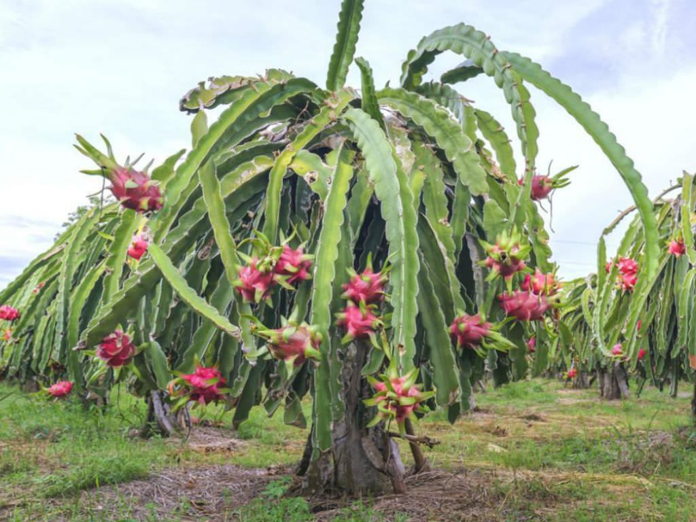
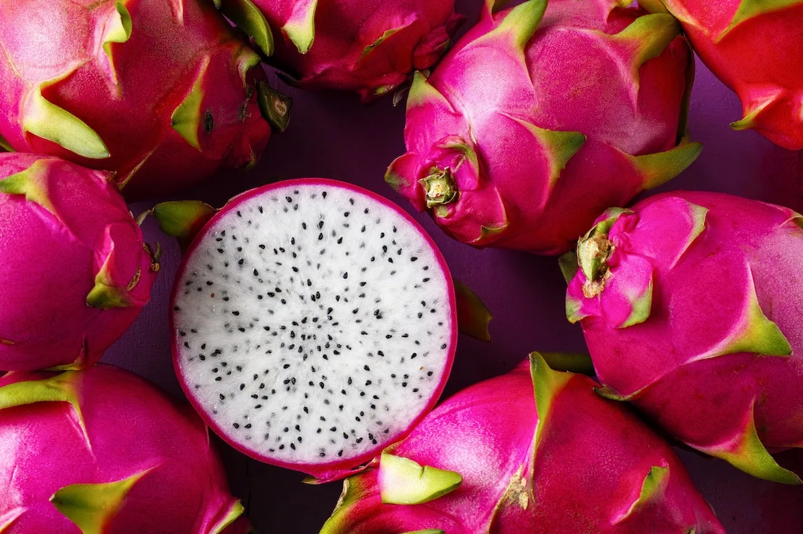
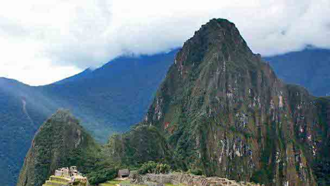

Hylocereus undatus
Fiamma della Notte Tropicale: energia, calore e rinnovamento

La Pitaya (Hylocereus undatus) è una polvere dal rosa acceso quasi irreale, ricavata dalla polpa del frutto di un cactus rampicante della famiglia delle Cactaceae. Conosciuta come "Frutto del Drago", non è solo un ingrediente esotico, ma uno dei superfood più celebrati della tradizione asiatica. La sua firma cromatica e nutrizionale sono le betacianine, composti responsabili della tonalità intensa e delle sue eccezionali proprietà antiossidanti.
Il Vietnam non è solo il principale produttore, ma il vero custode genetico della Pitaya, ospitando le piantagioni più estese e produttive al mondo. Le coltivazioni d'eccellenza si concentrano nelle province di Bình Thuận, Long An e Tiền Giang.
Le condizioni climatiche favorevoli permettono fino a sei raccolte annue. Il frutto viene colto a mano a maturazione completa, poi la polpa viene separata dalla scorza e disidratata a temperature controllate per preservarne le proprietà. Il prodotto viene infine macinato fino a ottenere una polvere fine, setosa e cromaticamente uniforme.




Le radici della Pitaya affondano nelle civiltà precolombiane di Messico e America Centrale, dove cresceva tra le rocce aride e veniva raccolta come alimento e rimedio naturale. Nel XVII secolo i colonizzatori spagnoli la portarono in Asia, dove attecchì rapidamente in Vietnam guadagnandosi il nome di Thanh Long, "Drago Verde", per via delle squame della buccia. Nei secoli divenne parte del paesaggio rurale vietnamita, fino a diventare uno dei prodotti agricoli d'esportazione più riconoscibili al mondo.
Le proprietà della Pitaya trovano oggi conferma nella letteratura scientifica: